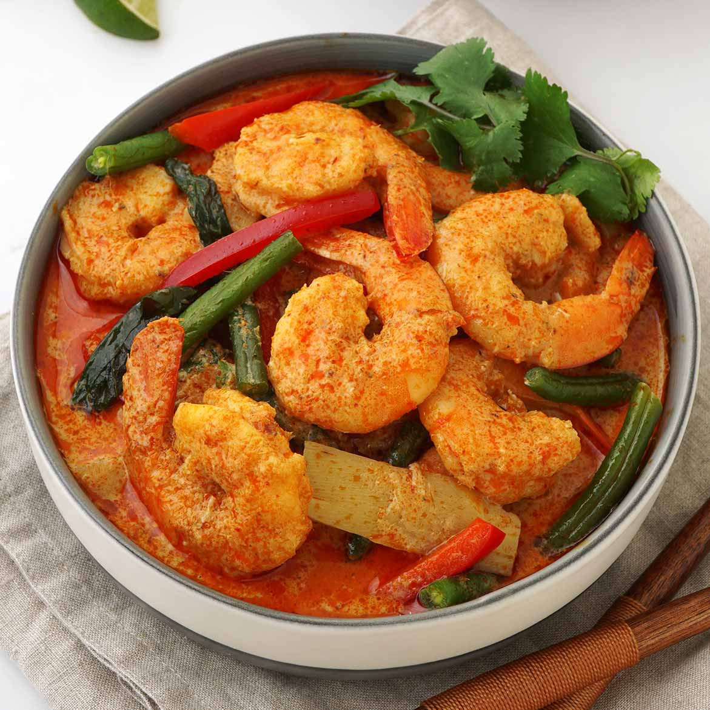

Prawn Curry

Process:
- Clean and devein 500g of prawns. Set them aside.
- In a large pan, heat 2 tablespoons of oil. Add 1 chopped onion and sauté until golden brown.
- Add 1 tablespoon of ginger-garlic paste and sauté for 1-2 minutes until fragrant.
- Add 2 chopped tomatoes, 1 teaspoon of turmeric powder, 1 teaspoon of red chili powder, 1 teaspoon of coriander powder, 1/2 teaspoon of cumin powder, and salt to taste. Mix well.
- Cook the masala mixture for a few minutes until the tomatoes are soft and the spices are well combined.
- Add the cleaned prawns to the pan and cook for 5-7 minutes until they turn pink and are cooked through.
- Add 1 cup of coconut milk and simmer for another 2-3 minutes.
- Garnish with fresh coriander leaves and serve hot Prawn Curry with steamed rice or naan bread.
Nutrient and Calorie Values
| Nutrient |
Value |
| Calories |
300 |
| Protein |
25g |
| Fat |
12g |
| Carbohydrates |
10g |
| Fiber |
2g |